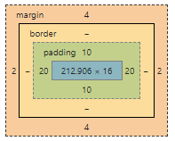

element.style {
background: var(--purple-dark);
}
buttons.scss
.what-i-do-btn {
padding: 10px 20px;
color: white;
background: var(--purple-light);
font-size: 14px;
margin: 4px 2px;
}
global.scss
button {
padding: 0;
color: #333333;
background: #CCCCCC;
font-size: 12px;
}
user agent stylesheet
button {
appearance: button;
-webkit-writing-mode: horizontal-tb !important;
text-rendering: auto;
color: -internal-light-dark(black, white)
letter-spacing: normal;
word-spacing: normal;
text-transform: none;
text-indent: 0px;
text-shadow: none;
display: inline-block;
text-align: center;
align-items: flex-start;
cursor: default;
box-sizing: border-box;
margin: 0em;
font: 400 13.3333px Arial;
padding: 1px 6px;
border-width: 2px;
border-style: outset;
border-color: -internal-light-dark(rgb(118, 118, 118), rgb(133, 133, 133));
border-image: initial;
}
